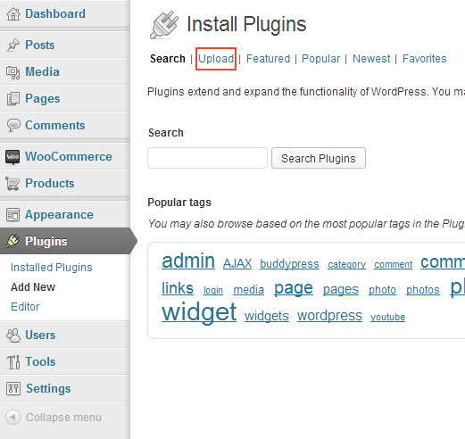

The WooCommerce Stock Synchronization Plugin allows you to synchronize the stock values of the same products across multiple WooCommerce websites.
1. Go to Plugins and then Add New, Choose the Upload button ( shown below with the red border )

2. From this page, choose Browse and look for the .zip file you downloaded from CodeCanyon. Select it and choose Install
3. Once you have pressed Install you will come to a page shown below. Text will show the progress of the installation. Please wait on this page until you see Completed. You will then have a button at the bottom called Activate Plugin, press this now.
4. You should to a new page, that will have the text in a yellow called saying Plugin activated ( as shown below ). The plugin has now been installed.
Under Stock Synchronization on the WooCommerce menu you will see the above page. It is important that you setup the URL's and Password Field
The location of the websites you wish to synchronize stock with.
An example. If you have these WooCommerce websites.
You will then, fill in at http://webshop.com the following example:
AND in http://webshop.co.uk the following example should be filled in:
Password: Fill in the same password between all the sites.
From a Product edit page, at the top of the WooCommerce box, you will find a field for SKU. Products with THE SAME SKU are the products that are synced together. ( the area marked in red )
So on BOTH sites ( we continue with the example from eariler ) http://webshop.com AND http://webshop.co.uk will require a product with the SAME SKU.
The next thing you should do is set the Inventory values.
Set the stock quantity to the required value. Once a sale has been made on 1 of this site then the stock will be decreased on the other URL's you filled in ( http://webshop.com for example )
The synchronize all button will take ALL the stock values you have and give them to all other URL's. This is an effective way of setting the same stock across ALL sites.
Pressing this button will take all the products you have from that site ( the site you pressed the button on ) and set those values to ALL sites you have linked.
Once you have done this, you will see a message in Activity Log that says
With the date and time the button was pressed and the amount of sites that responded that it was successful.
Example:
Pronamic: @pronamic
Remco Tolsma: @remcotolsma
Leon Rowland: @leonrowland
Help and support can be found at http://pronamic.nl/forums or mailed to support@pronamic.nl